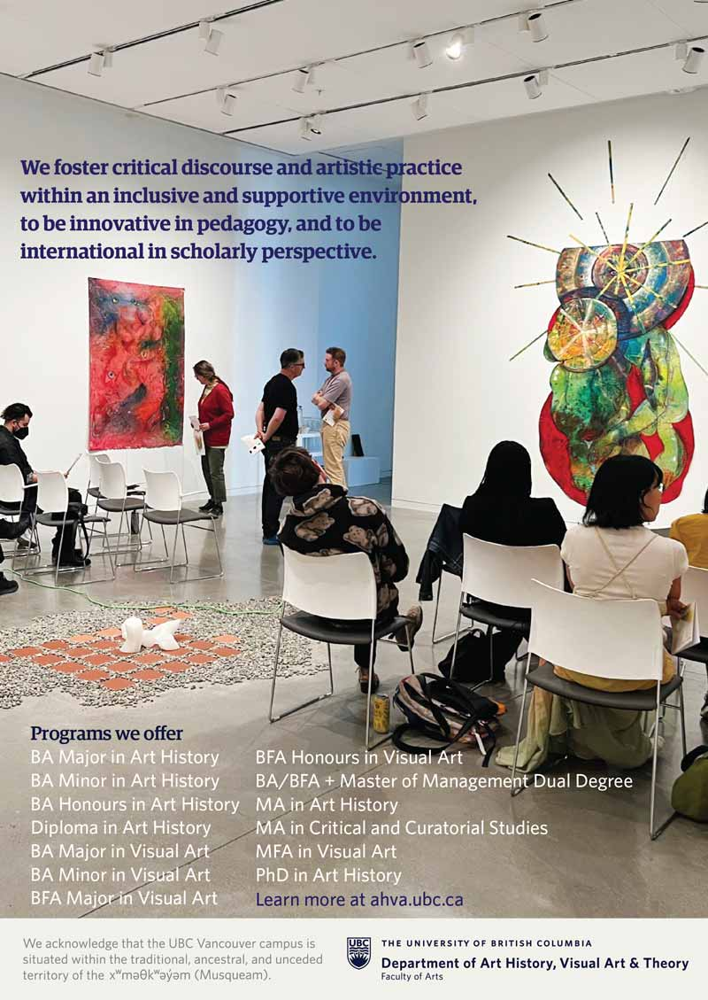
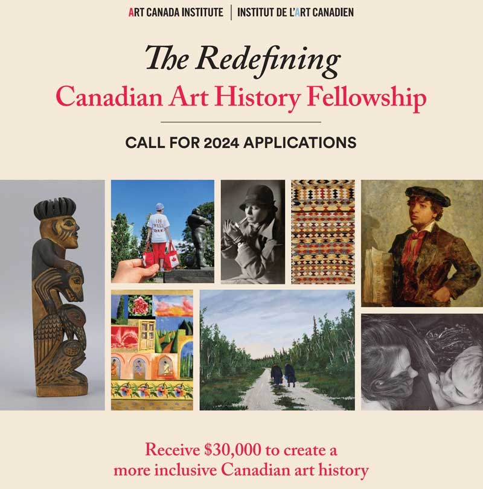

Schedule
-
thursday october 19
-
friday october 20
8:30 – 10:00
Sessions A
A.1 Activating Animals in the Visual Archive
A.2 Labour of our Bodies,
Part 1 A.3 Art 2.0: Platforms and Visual Art
A.5 Teaching Queerly: A discussion about Queer and Trans pedagogy in the arts
A.6 Strategies for Impermanent Mark-Making in Public Space
A.7 Materiality, Meaning, and the Senses: Art and Placemaking,
Part 1 A.9 Afrofuturism, Black Geographies, and Storytelling in Black Artistic Scholarship,
Part 1 10:00 –10:15
break
10:15 – 11:45
Sessions B
B.1 Photography, Activism, and the Visual Culture of Resistance
B.2 Labour of our Bodies,
Part 2 B.3 Burnout and Recovery: Academic life, lately
B.4 Expanded Practices: Composition in the Postsecondary Fine Arts Classroom
B.6 Speculative Methods and Alternative Archives in Art Historical Practice
B.7 Materiality, Meaning, and the Senses: Art and Placemaking,
Part 2 B.9 Afrofuturism, Black Geographies, and Storytelling in Black Artistic Scholarship,
Part 2 11:45 – 12:00
break
13:30 – 15:00
Sessions C
C.1 "Mirror, Mirror on the Wall, Who’s the Fairest of Them All?"
C.2 New Ways of Knowing in Feminist Art Histories
C.4 Art Under the Big Sky: Prairie Art Network Open Session
C.5 More Slow Burn than Triumph: Considerations of Media Art
C.6 Early Modern Landscape and Eco-Critical Perspectives
C.7 The Critical Image Forum, ca. 2023: Archival Practices and the Networked Image
C.8 Design Histories in a Post-colonial/Decolonial Frame
C.9 Love Songs to End Colonization: Karaoke as a subversive methodology for making change
C.10 OFFSITE EVENT In the middle of everywhere: WalkingLab Field School
15:00 –15:15
break
15:15 – 17:00
Sessions D
D.1 Trans people are under attack. What do we do? Stand up, fight back!,
Part 1 D.2 Nonlinear Dynamics in Research-Creation Methodology
D.3 Diasporic Art Practices Inside/Outside the White Cube
D.5 Room for Everyone: Opening Doors for Artist-parents and Their Families
D.8 Countering Narratives of Resource Extraction / Contrer les récits d’extraction des ressources
D.9 Artificial Intelligence: Art Historical and Contemporary Perspectives
17:00 –17:15
break
We thank our sponsor...
 -
saturday october 21
8:30 – 10:00
Sessions E
E.1 Convergent Temporalities on the Printed Page
E.2 Emotional Wrecks: Ruins and Disasters as Sites of Feeling,
Part 1 E.3 Research-Creation and the Visual Culture of Difference
E.7 Mad Play: Towards a Neurodivergent Ludology
E.8 INFO SESSION The Redefining Canadian Art History Fellowship,
Part 1 E.9 Sizing up the Local: Situating the Subject of Micro-art-history
10:00 –10:15
break
10:15 – 11:45
Sessions F
F.1 Trans people are under attack. What do we do? Stand up, fight back!,
Part 2 F.2 Emotional Wrecks: Ruins and Disasters as Sites of Feeling,
Part 2 F.3 Parallel: A Roundtable on the History and Archiving of Artist Run Centres in Canada
F.5 Thinking Environmentally in Practice: Sustainability and Studio Pedagogy
F.6 Community-based Art in Research and Pedagogy
F.7 Art Publishing Now and Forever
F.8 Thinking Materially About Photography
F.9 Beyond Unsettling: Methodologies for Decolonizing Futures
13:45 – 15:15
Sessions G
G.1 Entangled Relations: Art Crimes and Art Histories
G.2 Preceding and Gradually Unfolding: Curatorial Methodologies and Strategic Innovations
G.3 Unlearning the Nation: Transnational Possibility and Canadian Art Histories in the World
G.4 What Can Artists Learn from Social Movement Organizing?
G.5 Revisiting the Early Modern Green Spaces
G.8 INFO SESSION The Redefining Canadian Art History Fellowship,
Part 2 G.9 Queer and Horny: Making, Writing, Theorizing and Exhibiting Queer Art
15:15 – 15:30
break
15:30 – 17:15
Sessions H
H.1 In Dark Rooms: The Cave and the Photographic Imaginary
H.2 Pedagogy Caucus: Reimagining Assessment and Learning Outcomes
H.5 Current Research in Chinese Art in Canada
H.7 Research-Creation Caucus Roundtable: Research-(care)ation
H.8 From Avant-Garde to Pernicious: The Duplicity of Plastics and Contemporary Art Practices
We thank our sponsor...
